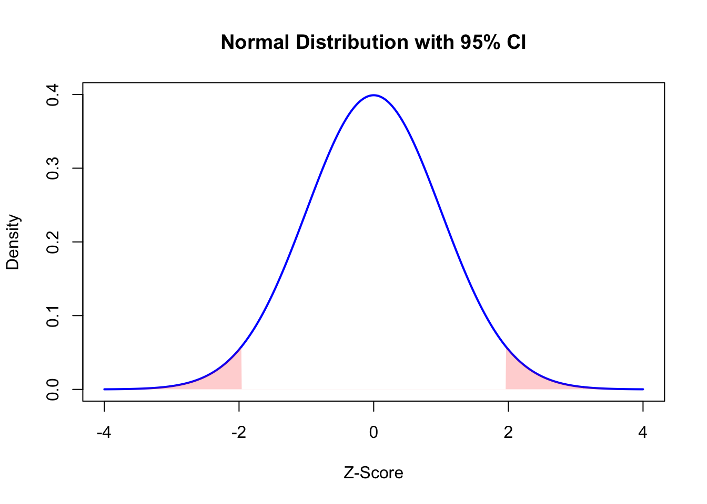
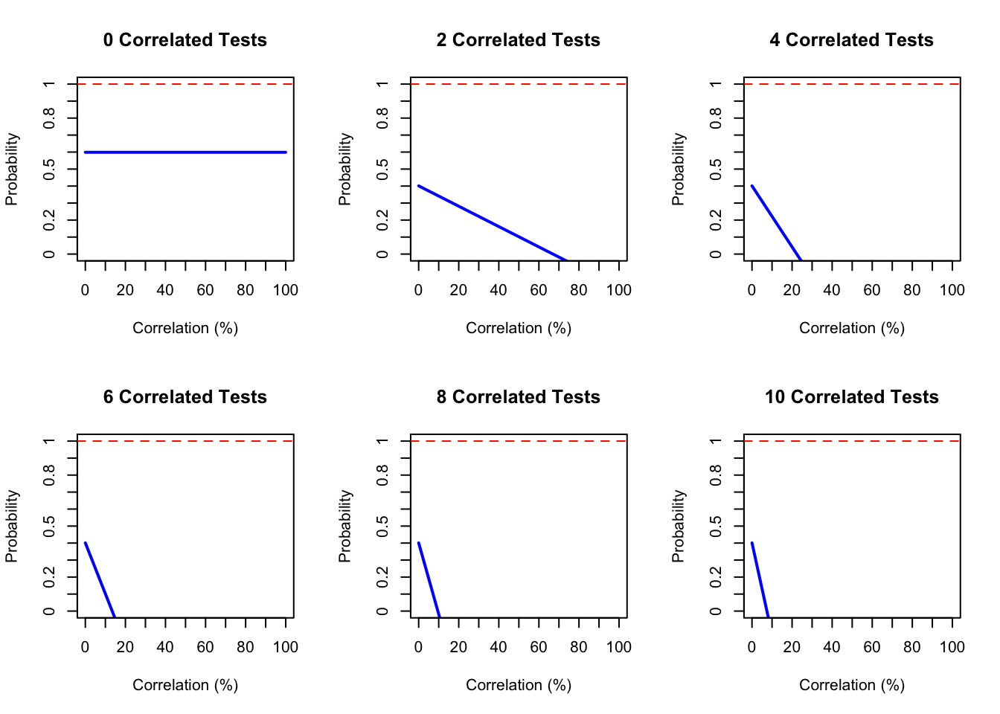

Suppose you have a blood test with 10 parameters, e.g. the complete blood count
What are the chances that you get a randomly abnormal result by chance?
Consider that tests are defined as abnormal if they fall outside the 95% confidence interval.
We can show this region of ‘abnormality’ on a normal distribution (light red below)
This would seem to imply that for every 20 tests you run, you would expect at least one to be ‘abnormal’ by chance. However, this assumes those tests are completley independent.
What if we test the scenario where they are not completely independent, but rather intercorrelated?
We can model this by considering subsets of intercorrelated events. For ease of plotting, we will consider a 10 test scenario:
Consider the following scenarios, where 0 of the tests were intercorrelated (independence), compared with the scenario where 2, 4, 6… or all 20 of the tests were intercorrelated.
We can also check this against the degree of intercorrelation, and how that influences the probability of getting at least 1 ‘abnormal’ result by chance.
# Define constants
p <- 0.95 # Base probability
n <- 10 # Total number of events
correlated_subsets <- seq(0, n, by = 2) # Subsets of intercorrelated events
correlation_values <- seq(0, 1, length.out = 100) # Correlation values from 0 to 100%
# Function to calculate probability for a subset of intercorrelated events
calculate_probability <- function(subset, r) {
if (subset == 0) {
return(p^n) # All events are independent
}
independent_events <- n - subset
(1-(p^subset * (1 + (subset - 1) * r)) * (p^independent_events))
}
# Create a grid of plots
par(mfrow = c(2, 3)) # Adjust grid layout (3x3 for up to 9 subsets)
# Generate plots for each subset
for (subset in correlated_subsets) {
probabilities <- sapply(correlation_values, function(r) min(calculate_probability(subset, r), 1))
plot(
correlation_values * 100, probabilities,
type = "l", col = "blue", lwd = 2,
xlab = "Correlation (%)", ylab = "Probability",
main = paste(subset, "Correlated Tests"),
xaxt = "n", yaxt = "n",
ylim = c(0, 1) # Force y-axis to start at 0 and end at 1
)
axis(1, at = seq(0, 100, by = 10), labels = seq(0, 100, by = 10)) # X-axis ticks
axis(2, at = seq(0, 1, by = 0.1), labels = seq(0, 1, by = 0.1)) # Y-axis ticks
abline(h = 1, col = "red", lty = 2) # 100% cap line
}
Here we see that although for 10 independent tests, the probability of a randomly abnormal result is indeed around 60%, this probability drops very quickly either correlation increases, or the number of correlated events increases. For instance, if 2 of the tests are 20% intercorrelated, the chances of a randomly abnormal result out of 10 drops to about 30%, and if 4 of the tests were intercorrelated at 20%, this probability essentially drops to 0.